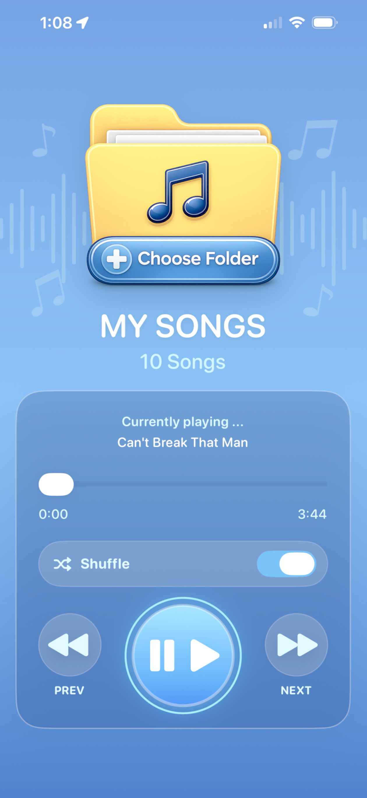

What audio formats are supported?
Folder Looper supports MP3, WAV, AAC, AIF, AIFF, CAF, and M4A audio files.
Play audio files directly from folders in the Files app.

Play audio files directly from folders selected in the Files app
Background audio support
Supports MP3, WAV, AAC, AIF, AIFF, CAF, and M4A formats
Remembers your selected folder between launches
Continuous playback through all files in a folder
Simple and easy to use with intuitive playback controls
Optional shuffle mode
Displays the currently playing track and folder information
Folder Looper supports MP3, WAV, AAC, AIF, AIFF, CAF, and M4A audio files.
Audio files can be stored locally on your device, in iCloud Drive, or in other locations accessible through the Files app.
Yes. Folder Looper supports background audio playback.
Yes. Shuffle mode can be enabled or disabled at any time and your preference is remembered between launches.
Questions, suggestions, or bug reports:
therattermans@hotmail.comI'm happy to help.
Folder Looper does not require account creation and does not collect personal information.
View Privacy Policy >